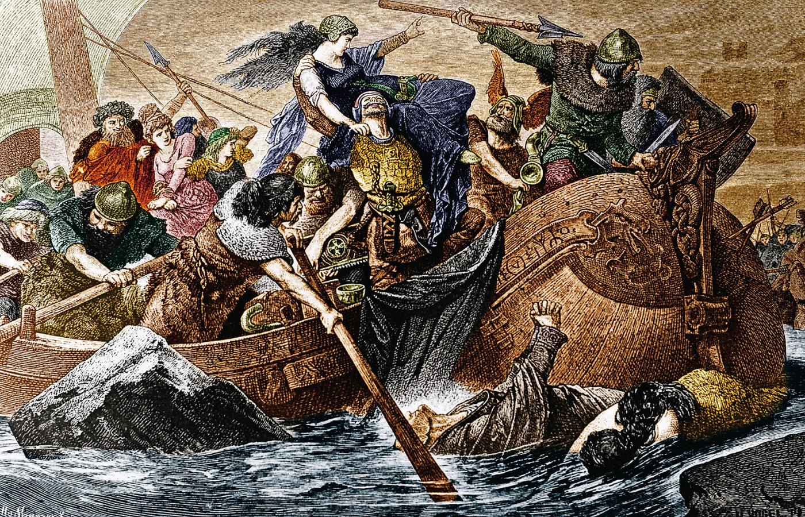
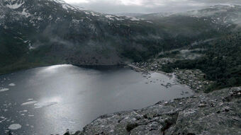
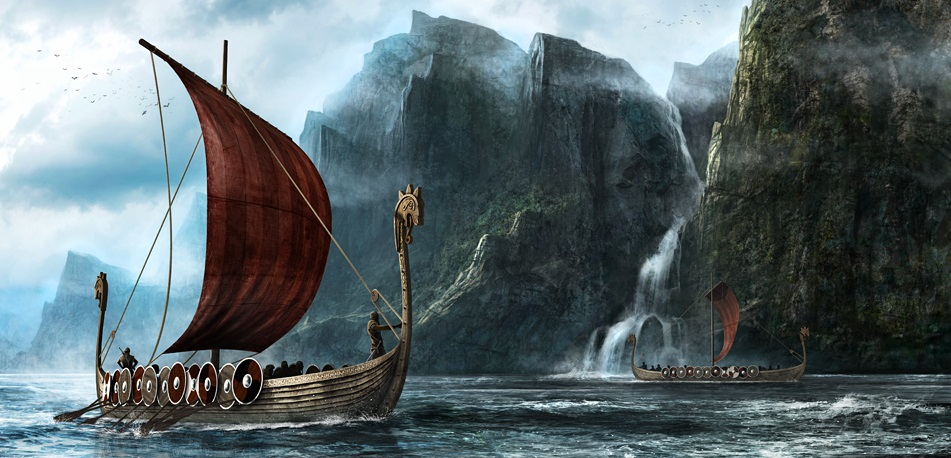

Wikingowie – skandynawscy wojownicy, którzy od VIII wieku podejmowali dalekie wyprawy o charakterze kupieckim, rabunkowym lub osadniczym.
Organizatorami wypraw do krajów Europy Zachodniej byli m.in. Normanowie duńscy i norwescy, a także mieszkańcy dzisiejszej Szwecji południowej (prowincje Bohuslän, Halland, Uppland, Skania i Blekinge).
Normanowie szwedzcy, głównie Swionowie i Goci, organizowali wyprawy do krajów położonych na wschód i południe od ich ojczyzny, docierając do Bułgarii Kamskiej, Rusi Kijowskiej, Bizancjum, a nawet Kalifatu Bagdadzkiego. Wikingowie dotarli też do Ameryki Północnej na długo przed Kolumbem. Dopłynęli do półwyspu Labrador – Winlandii (wschodnie wybrzeże Kanady).
Skandynawia – region północnej Europy, obejmujący kraje: Szwecję, Norwegię oraz Danię. Obejmuje część z krajów nordyckich.
Czasem w nieskandynawskich mediach, biorąc pod uwagę wpływy szwedzkie i duńskie, do Skandynawii zalicza się Islandię, czy nawet niegermańskie kraje, takie jak: Finlandia, niewielką część Rosji (Karelia), Estonia, niekiedy też Łotwa, a nawet Litwa. W samych krajach skandynawskich za Skandynawię uważa się jednak tylko trzy kraje (Dania, Norwegia, Szwecja).
Choć ze ściśle geograficznego punktu widzenia termin Skandynawia odnosi się do krajów położonych na Półwyspie Skandynawskim (tj. Szwecji i Norwegii), pojęcie to tradycyjnie rozciąga się też na Danię, ponieważ przez wieki należała do niej Skania, południowa część półwyspu. Te trzy kraje powiązane są więzami historycznymi (unia kalmarska) i kulturowymi (mitologia nordycka, języki skandynawskie, wikingowie, luteranizm, nazwą waluty – pozostałość po unii walutowej).
Z krajów skandynawskich wywodzili się wikingowie, Goci i Gepidowie.
Współcześnie kraje te nadal łączy podobna polityka. Dania, Norwegia i Szwecja są monarchiami silnie zdominowanymi przez poglądy lewicowe.
Pierwszy odnotowany napad wikingów miał miejsce w 793 na wybrzeżach Anglii (Lindisfarne). Początkowo ich wyprawy nie wychodziły poza obręb Morza Północnego i wysp szkockich – Orkadów, Szetlandów, Hebrydów. Około roku 800 po raz pierwszy wylądowali na Wyspach Owczych, które szybko zostały przez nich skolonizowane. W 874 dotarli również do Islandii. Kolejny wiek przyniósł odkrycie Grenlandii (ok. 982) i Ameryki (półwysep Labrador i Nowa Fundlandia – ok. 1000[5]), gdzie również założyli swoje osady. Jednak walki z tubylcami i kłótnie wewnętrzne rychło spowodowały porzucenie osad w Nowym Świecie.
Z biegiem lat bandy wikingów rozrosły się do pokaźnych flotylli i zwiększył się ich zasięg. Niektóre grupy, opływając Półwysep Iberyjski, dostawały się na Morze Śródziemne i grabiły wybrzeża południowej Galii i Italię. Inne grupy, wyprawiając się na wschód, penetrowały szlaki i tereny wzdłuż rzek Dźwiny i Wołchow oraz Dniepru, aż do Morza Czarnego, gdzie łupiły przybrzeżne miasta Cesarstwa Bizantyńskiego. Wołgą przepływali aż na Morze Kaspijskie. Wikingowie bogacili się jednak nie tylko łupieniem, ale również handlem. Prowadzili intratny handel z Arabami, którym za srebro z Taszkentu i Afganistanu dostarczali futra, ozdoby z metali szlachetnych i niewolników z terenów nadbałtyckich.
Po fazie najazdów rabunkowych Normanowie zaczęli się osiedlać na zdobytych terenach, zwłaszcza na wyspach: Orkadach, Szetlandach, Islandii, a także w Irlandii i Brytanii oraz na półwyspie Cotentin we Francji północnej, gdzie założyli księstwo Normandii[potrzebny przypis]. Zamieszkali w nim wikingowie zaczęli używać języka francuskiego, a w 919 przyjęli chrześcijaństwo. Państwo wikingów w Normandii istniało przez ponad 300 lat, stając się w końcu księstwem lennym króla Francji.
Dotarli także w głąb dzisiejszej Rosji i Ukrainy (Kijów znany jako Kanugård był ich faktorią handlową) oraz do Wielkiej Brytanii i Europy kontynentalnej.
Na początku XI wieku zdołali opanować niemal 80% terytorium Anglii, tworząc własne królestwo, którego królem był Kanut Wielki, po czym zostali wyparci na skutek rebelii Anglów i Sasów. Po 1066 królestwo anglosaskie zostało jednak ponownie podbite przez Normanów z Normandii, którzy również wywodzili się od wikingów, a królem Anglii został ponownie wiking z pochodzenia – Wilhelm Zdobywca – który stał się założycielem dynastii normandzkiej, władającej Anglią przez ponad 300 lat.